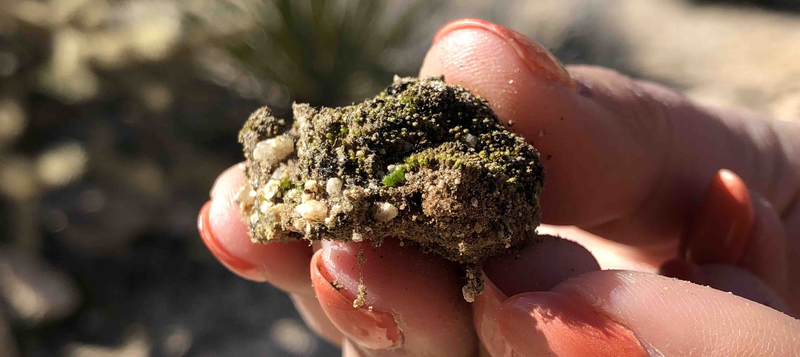

Teaching

Undergraduate courses.
- BIO 1B, Introductory Biology Laboratory, UC Berkeley
- BIOL 360, Ecology Laboratory, California State University, Los Angeles
- BIOL 156, Plant Biology Laboratory for Non-Majors, California State University, Los Angeles
- CHEM-C496, Methods in Teaching Chemistry, Purdue University, Indianapolis
- CHEM-C105, General Chemistry I Recitation, Purdue University, Indianapolis
- BIOL-K103, Concepts of Biology II Recitation, Purdue University, Indianapolis
Educational workshops & outreach.
- "Biocrusts: The Living Skin of the Earth," Expanding Your Horizons, a STEM workshop for middle-school aged girls. Workshop Organizer and Co-Instructor. UC Berkeley, 2019.
- "Introduction to R, Git, Shell, and Reproducible Analysis in R," Software Carpentry. Workshop Helper. Berkeley Institute for Data Science, UC Berkeley, 2019.
- "Biological Sciences Discipline-Cluster Workshop," Teaching Conference for First-Time Graduate Student Instructors. Workshop Instructor. UC Berkeley, 2018.
- "Introduction to Shell, Git, and R," Data Carpentry. Workshop Helper. Berkeley Institute for Data Science, UC Berkeley, 2018.
- "Introduction to Genomics Data Wrangling," Data Carpentry. Workshop Helper. Berkeley Institute for Data Science, UC Berkeley, 2018.
Mentoring.
Undergraduate Research Apprenticeship Program, UC Berkeley.

Current mentees.
- Dean Berkowitz, UCB Class of 2021
- Jordan Jomsky, UCB Class of 2022
Former mentees.
- Heloise Carion, UCB Class of 2022
- Shloka Reddy, UCB Class of 2022
- Easha Sagar, UCB Class of 2019
Biotech Partners.

Former mentees.
- Angela Sacramento, Oakland Technical High School, Class of 2019
Undergraduate research assistants.
Former mentees.
- Brittanie Rodriguez, California State University, Los Angeles, Class of 2014
- Katelyn Millette, California State University, Los Angeles, Class of 2015
“There is an ancient conversation going on between mosses and rocks, poetry to be sure. About light and shadow and the drift of continents. This is what has been called the 'dialect of moss on stone - an interface of immensity and minute ness, of past and present, softness and hardness, stillness and vibrancy, yin and yan.'"
- Robin Wall Kimmerer, Gathering Moss: A Natural and Cultural History of Mosses